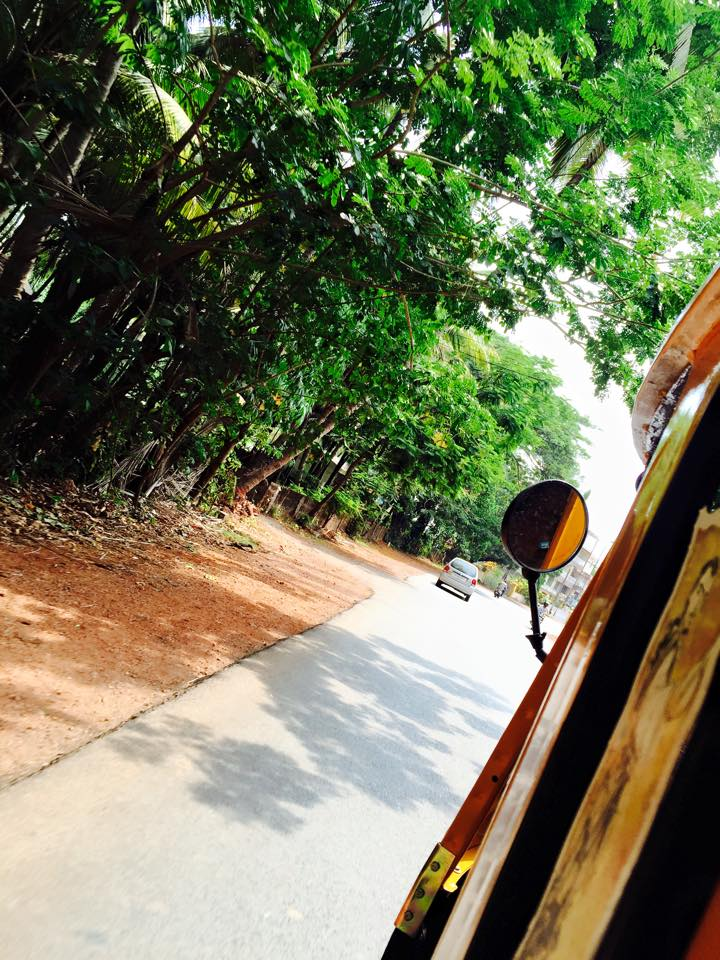
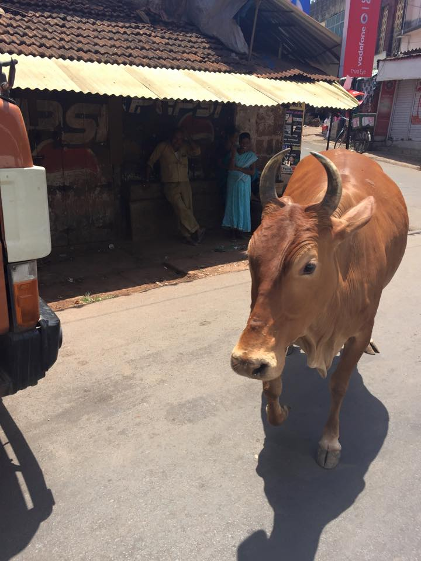
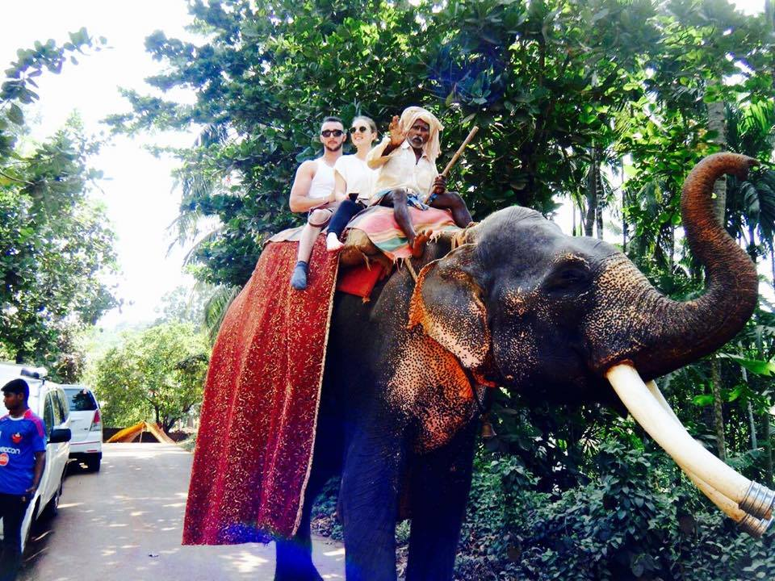
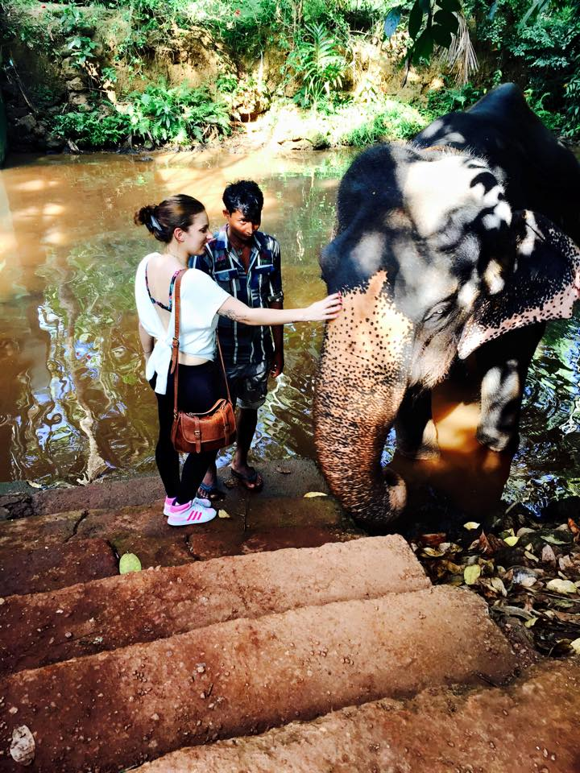
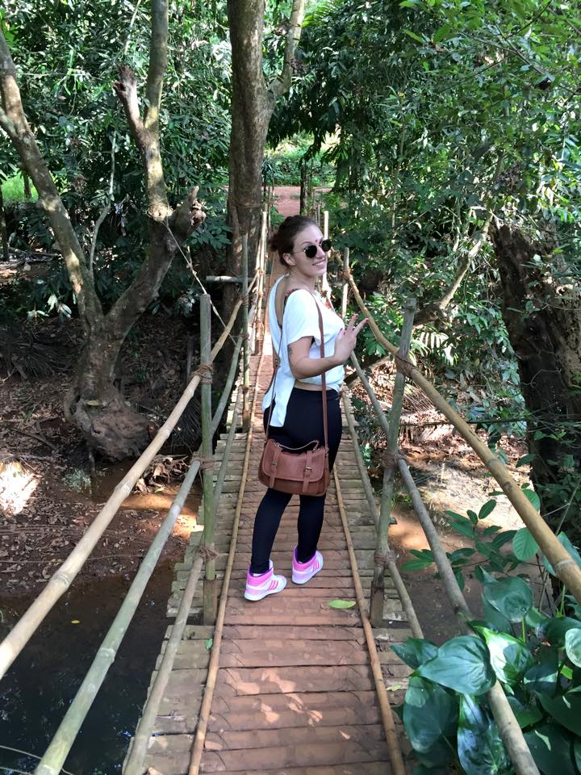
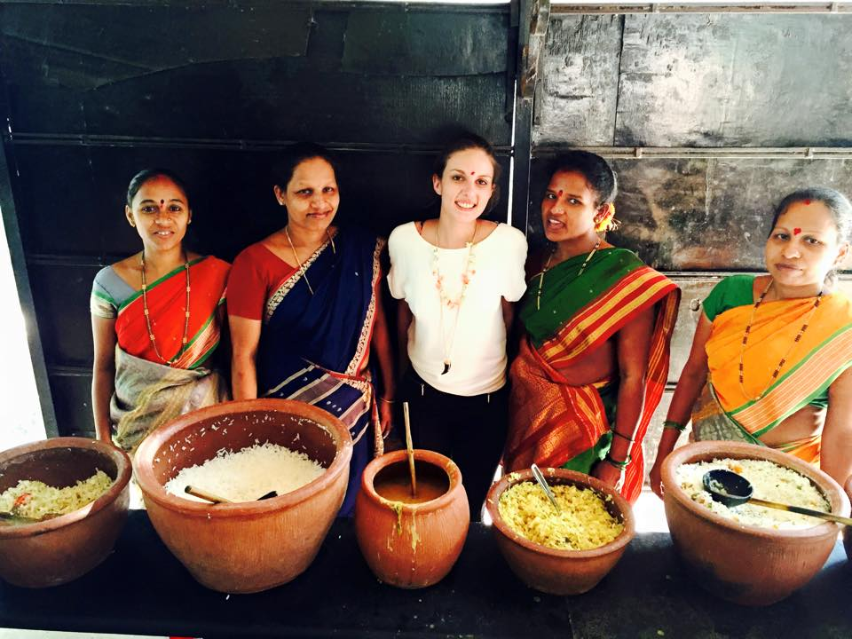

Bienvenue pour la découverte de ce pays plein de couleurs qu'est l'Inde ! Et plus particulièrement dans la ville de Goa, là ou j'ai passé ma semaine d'escale.
J'ai beaucoup aimé ce pays pour toutes ses couleurs, ses odeurs, tout ses paysages, toute cette nature peu dénaturée par l'homme.
Si vous devez voyager en Inde, vous pourrez prendre un hôtel 4 étoiles, manger et faire des activités pour des prix dérisoires. A savoir que 100 roupies = 1,25 euros ! Le prix le plus cher d'un repas vous coûtera environ 4 euros, de quoi se régaler de plats locaux ! Bien évidemment la vache étant un animal sacré en Inde vos plats ne seront que du poisson ou le fameux poulet tandori.
En revanche faites très attention lorsque vous commandez à boire, l'eau est impropre à la consommation et peut vous transmettre des hépatites et autre maladies! Alors ne prenez jamais de glaçons dans vos coktails !!
Bien évidemment en tant que bon touriste certaines activités sont absolument à faire !
Balade à dos d'éléphant
Spicy Plantation
Et pour clore le tout voici quelques photos !






Pour un voyage haut en couleur vous savez dorénavant où aller !
{kind=link}
{kind=link}
{kind=link}
{kind=link}
{kind=link}
{kind=link}